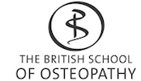
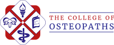

Osteopathic Lecturing
Since 2010, I have delivered post-graduate continuous professional development (CPD) lectures & workshops in osteopathy. While I have occasionally taught anatomy, high velocity thrust (HVT) & osteopathic principles, my speciality is an American osteopathic manipulative technique (OMT) called Still Technique.
I deliver a range of services for Still Technique, from online or face-to-face lectures to 1-day & 2-day face-to-face workshops.
In the UK, I have delivered Still Technique lectures & workshops for:
- CPD Today
- British School of Osteopath (BSO)/University College of Osteopathy (UCO)
- Manus Sinistra (UCO SU society)
- College of Osteopaths
- London Osteopathic Society (LOS)
- Midlands Osteopathic Society (MOS)
- Central Sussex Osteopaths
- Waltham Forest Osteopathic Group (WFOG)
In Europe, I have delivered Still Technique workshops for:
- CPO Fulford DO (Italy)
- Rehaintegro (Poland)
- Panta Rhei (Netherlands)
For more details of my lecturing services, please contact me.
For a flavour of my workshops, why not have a look at the Gallery?

